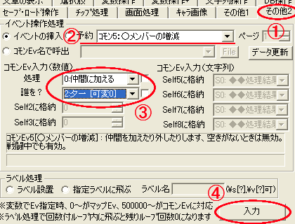
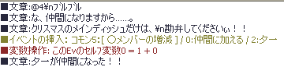
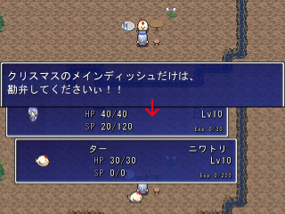

・適当な場所にイベントを作成してニワトリの画像を設定しておきます。
手順は◆決定キーで起動するイベントの【1】～【5】を参考にしてください。

| 話しかけることで、 新しいメンバーが仲間になるイベントを作成します。 |
|
・まずマップ選択 ・適当な場所にイベントを作成してニワトリの画像を設定しておきます。 手順は◆決定キーで起動するイベントの【1】～【5】を参考にしてください。 | |
|
作成したら、イベントウィンドウの右下にある「■コマンド入力ウィンドウ表示■」をクリックしてください。 「イベントコマンドの挿入」ウィンドウが出たら、その他2タブをクリックします。画像の① |  |
【2】画像の②イベントの挿入部分の▼ボタンをクリックします。 コモンイベントの名前が出てきますので「ｺﾓﾝ5:○メンバーの増減」を選択してください。 次に、ｺﾓﾝEv入力(数値)を見てください。【2】画像の③ 「処理」には「0:仲間に加える」を、「誰を？」の所は仲間に加えるメンバーを選択します。 今回は夕一君を仲間に入れようと思いますので、「2:夕一 [可変0]」を選択しました。 設定が終わったら【2】画像の④、入力ボタンをクリックします。 これでイベントは完成です。 |
|
これだけじゃ寂しいので、仲間になるときの文章を入力してみます。 入力が終わったら忘れずにセーブしておきましょう！ |  |
|
最後に、テストプレイをして確認しましょう。 ※もし上手くいかなかったら……。 【3】の画像③「処理」が、「1:仲間から外す」や 「2:歩行画像の更新だけ」になっていないか。 「誰を？」の所で仲間の選択を間違えていないか。等を確認してください。 以上で「メンバーを増減させたい」は終了です。 お疲れ様でした。 |  |
| 既に仲間になっているキャラクターをメンバーから外したい場合は、 【3】の画像③「処理」で「1:仲間から外す」を選択してください。 後は、仲間にした時と同じように、「誰を？」で対象キャラクターを選択するだけです。 |